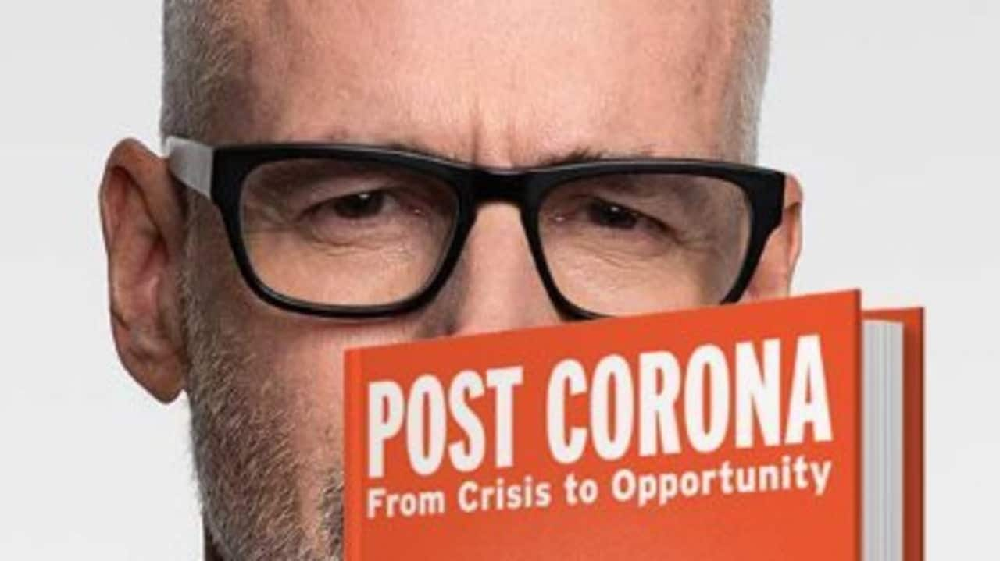
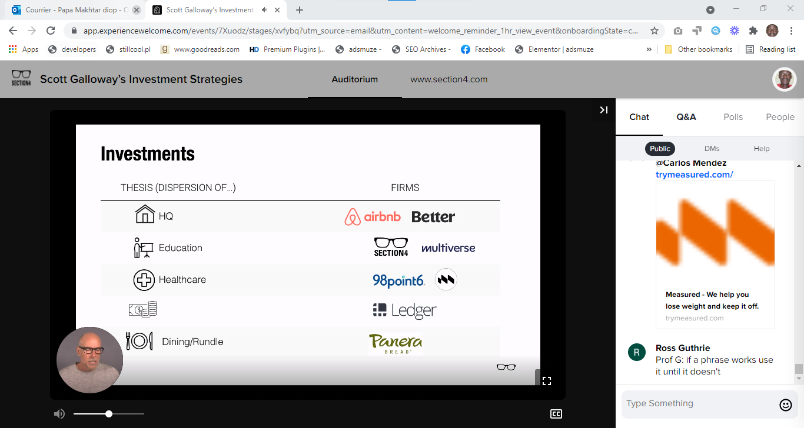
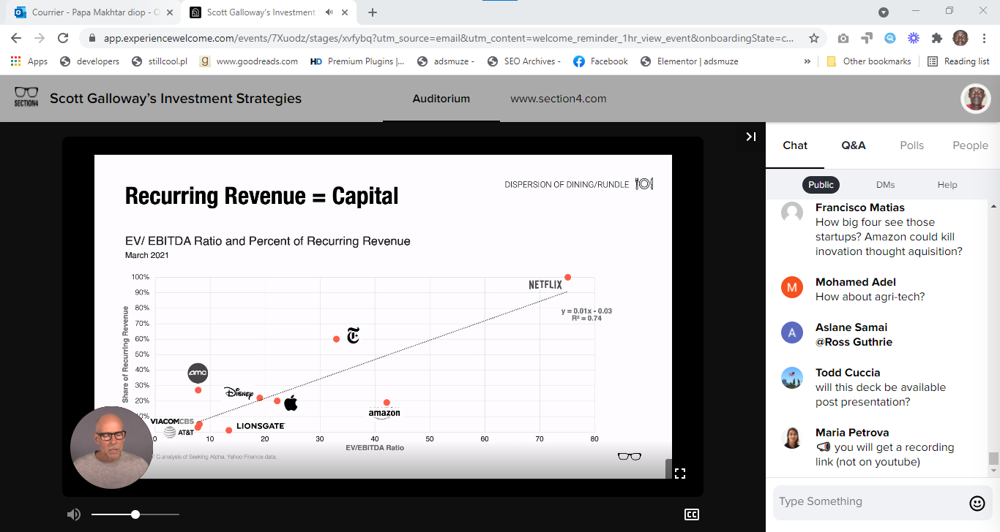
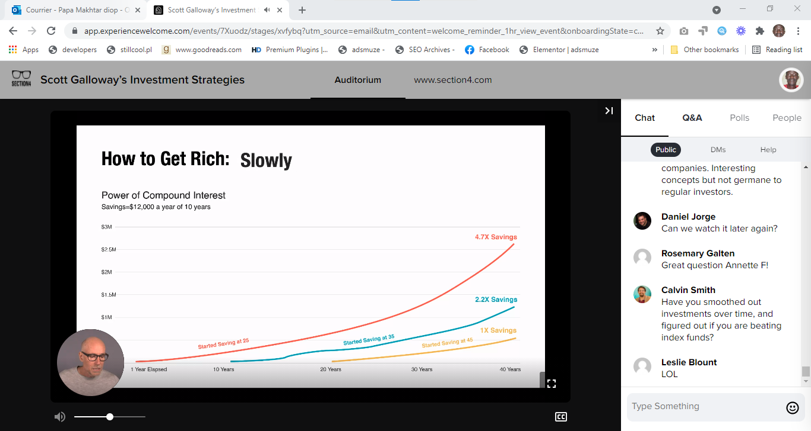
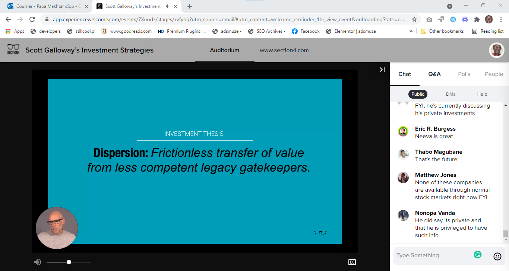
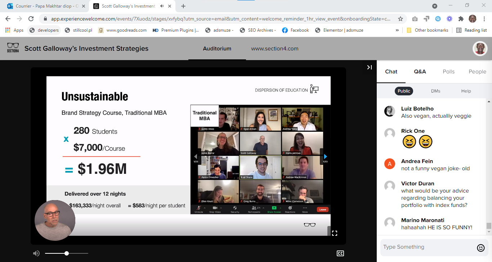
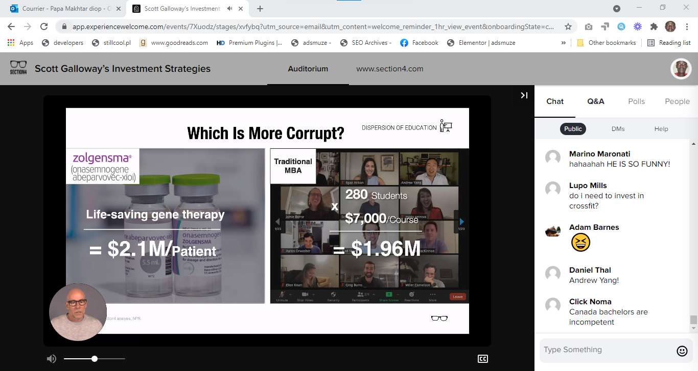
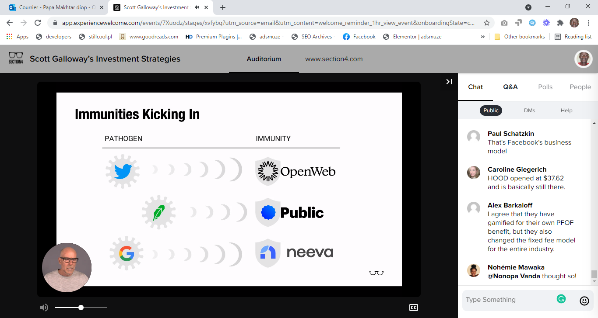
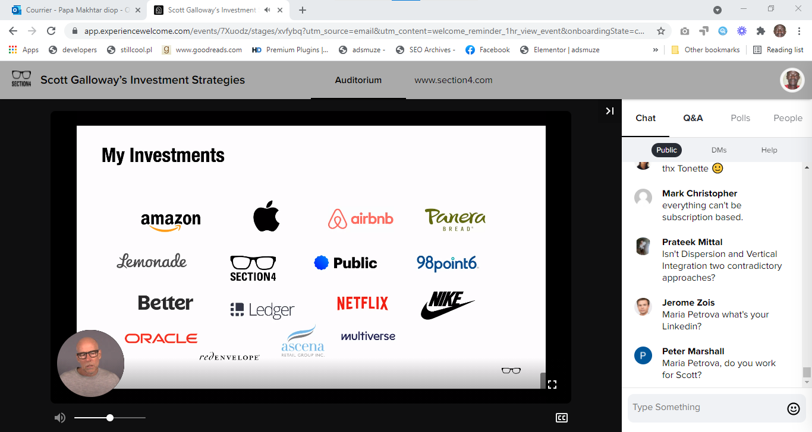
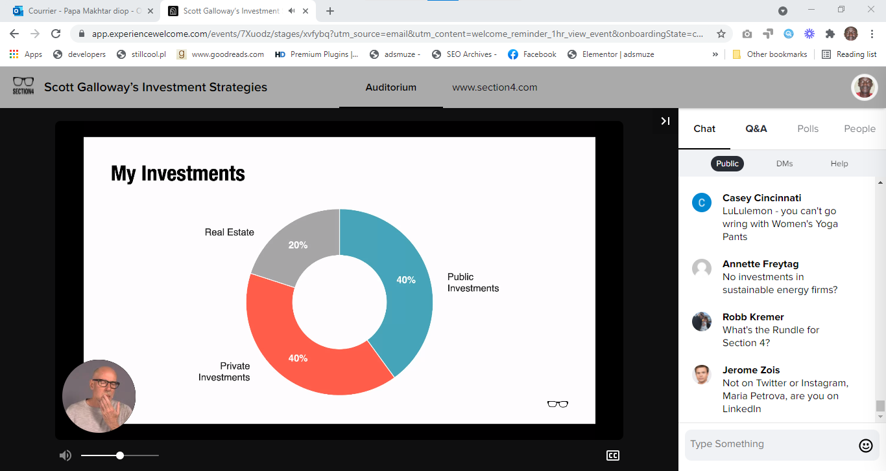

Scott Galloway’s Investment Strategies


Scott Galloway or prof G, the author of Post corona from crisis to opportunity was unpacking his investment strategies in a live video session today. As a participant, of this live session that was worth meaningful insights about how to invest and where to invest, I thought that it was important to share the great pieces of information I got from this event with you, data-driven investors, to act on them as investment frameworks if you want. For you who want a platform idea, there is at the end of this article an idea of a platform about alternative financial data that you can build and operates. This alternative Data platform is base on the screenshot below.

But before the platform here some key investment insight got from participating in this great webinar of Scott Galloway (Scott Galloway).
Focus on companies that have recurring revenues driven business models

I really like this way of classifying companies according to the part of the recurring revenue of their whole EDIBDA. With this way of classification, you could clearly see how companies like Netflix are standing out because their business models are mainly based on subscriptions from users. Amazon is like that because it has also a lot of subscription-based offers but my opinion is that a well established is e-commerce business model if it is base on products that people buy frequently (daily or monthly) because those products lie on recurring needs can also be seen as ones that have a recurring revenue business model. Amazon is such a kind of recurring revenue-driven company and Google also (I may explain why Google also in a coming article).
Start investing early and be a long term value investor

Given the theory of investing of Scott Galloway, you will be saving 4.7x more if you started investing at the age of 25 than if you started at 45 years old. This illustrates that starting to invest early is important due to the compounding effect but as he points out it is better to have a long-rem view of investing rather than being this young gambler using platforms like Robinhood for daily trading stonk stocks. According to recent metrics, more than 90% of Robinhood users are losing money risking their little savings on risky day trading activities of options and stocks.
The Galloway theory of dispersion

The theory of dispersion is about the disruption of all these markets, business sectors, and activities that was held by high skilled hands that the evolution of technology will allow for other less skilled persons, companies or organization to operate. This transfer of value has been seen in past digital platforms like Uber for example that allowed everyone to be able to act like a taxi driver what used to require holding a Taxi license and following a hard path to get into this business.
Dispersion: Example of the Education of Executives with MBA programs
During this live event prof G also highlight how traditional MBAs are attacked by innovative native digital MBA programs like AltMBA and Section 4 the one he is running. He explains how his theory of Dispersion of a sector applies to Education. You can also get more insights into this topic as I did reading the Book of professor Clayton Christensen and listening to some of his talk about this topic of the disruption of the university. But my sake is that universities like Harvard, Standford, MIT, and Wharton will still matter for a long because of the status that their degrees provide into the professional world.
As data-driven investors, you can search for startups that are trying to run alternative MBA programs and invest in them because these MBA programs are mainly created by great professors and entrepreneurs who will leverage their network to get their alumni the best place in the best companies and as these alumni continue to be fed into these companies the status and the brand awareness of these MBA programs like section 4 will start to increase.


The investment theory of pathogenic business
Prof G has an interesting theory of classification of business because he sees some companies like Twitter, Robinhood, and Google as being pathogenic what opens opportunities for other entrepreneurs maybe you to build products and services that have the goal of fixing these pathogenic germs. For example with theoric framework of investment, RobinHood is seen as being reached by the pathogenic fact that most of its users are losing money because they are trying to day trade stocks and options

Bonus: A product Idea to build as a platform


As someone interested in product and services engineering and development, I was also willing to highlight to you a product that you can build from this picture above that highlights the investments of Scott Galloway. This product is a platform that will source and track the investment portfolio of thought leaders and influential people like Scott Galloway.